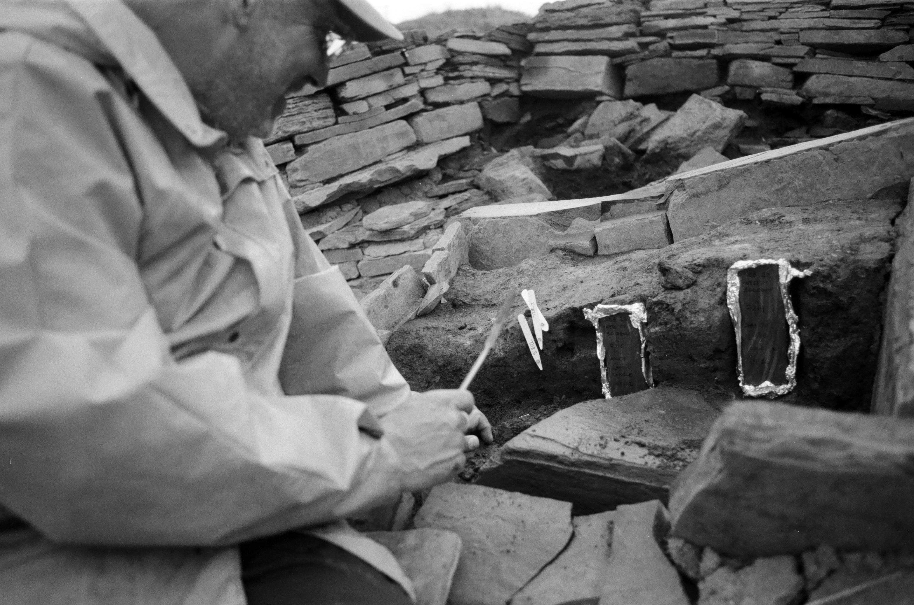

Inquiring Minds Want to Know
Home
Data Profolio
Side Project
Dang’s Design
Kid’s Book
Resume
Categories
All
(5)
Archeology
(1)
BLM
(1)
Database
(1)
Neoglithic
(1)
RShiny
(2)
Reality TV
(1)
Scotland
(1)
Sports
(1)
TRAVELING
(1)
Tidy Tuesday
(1)
Becca Barbanell : Data Portfolio
BLM:TRAVELING THE USA
BLM
TRAVELING
Apr 3, 2023
Becca Barbanell
Tidy Tuesday : Reality of being Alone
Tidy Tuesday
Reality TV
Tidy Tuesday is a weekly social data project in the R programming language community, created by R for Data Science authors Hadley Wickham and Mara Averick. The project…
Mar 20, 2023
Becca Barbanell

Ness of Brodgar a Neoglithic Archeology Site in Orkney Scotland
RShiny
Archeology
Database
Scotland
Neoglithic
Feb 27, 2023
Becca Barbanell
The Quest for the GOAT
RShiny
Sports
For decades armchair athletes have been debating, who is the the greatest basketball player of all time:
LeBron James
,
Kobe Bryant
or
Michael Jordan
.
Jan 30, 2023
Becca Barbanell & Jennifer Rana
No matching items